Fiches de lecture
Texte documentaire à trous avec banque de mots, compréhension orale par QR code (audio gratuit) et mots mêlés, avec corrigé.
3.620 ressources
Thème
Niveau
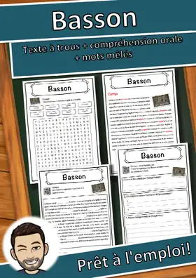
Basson – Fiche : texte à trous, compréhension orale et mots mêlés
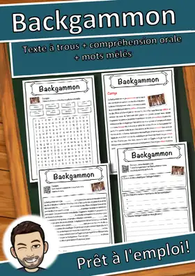
Backgammon – Fiche : texte à trous, compréhension orale et mots mêlés
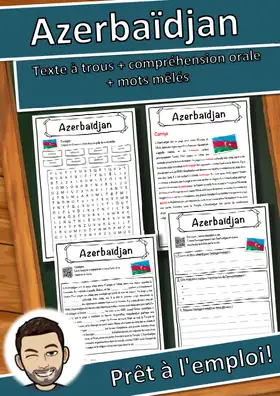
Azerbaïdjan – Fiche : texte à trous, compréhension orale et mots mêlés
Anguis fragilis – Fiche : texte à trous, compréhension orale et mots mêlés
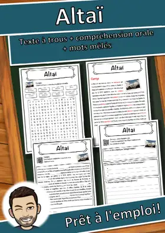
Altaï – Fiche : texte à trous, compréhension orale et mots mêlés
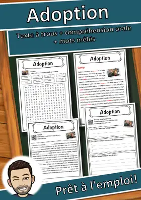
Adoption – Fiche : texte à trous, compréhension orale et mots mêlés
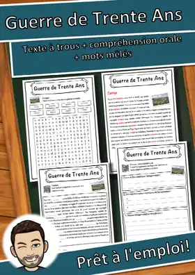
Guerre de Trente Ans – Fiche : texte à trous, compréhension orale et mots mêlés
Chocolat – Fiche : texte à trous, compréhension orale et mots mêlés
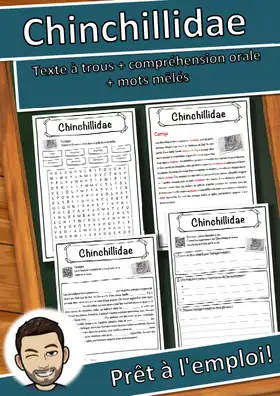
Chinchillidae – Fiche : texte à trous, compréhension orale et mots mêlés
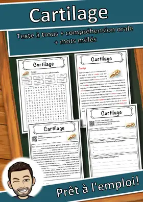
Cartilage – Fiche : texte à trous, compréhension orale et mots mêlés
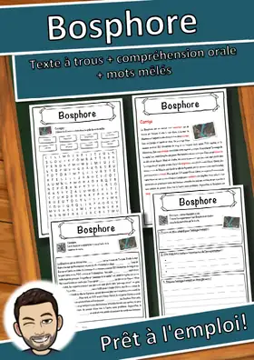
Bosphore – Fiche : texte à trous, compréhension orale et mots mêlés
Antoine de Saint-Exupéry – Fiche : texte à trous, compréhension orale et mots mêlés
Alphabet latin – Fiche : texte à trous, compréhension orale et mots mêlés
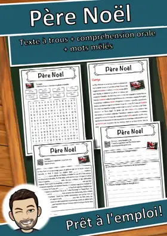
Père Noël – Fiche : texte à trous, compréhension orale et mots mêlés
Jean-Jacques Rousseau – Fiche : texte à trous, compréhension orale et mots mêlés
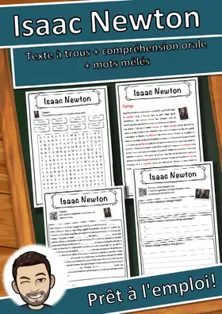
Isaac Newton – Fiche : texte à trous, compréhension orale et mots mêlés
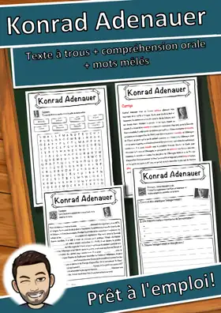
Konrad Adenauer – Fiche : texte à trous, compréhension orale et mots mêlés
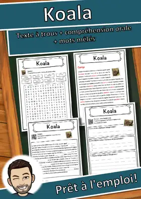
Koala – Fiche : texte à trous, compréhension orale et mots mêlés
Kinshasa – Fiche : texte à trous, compréhension orale et mots mêlés
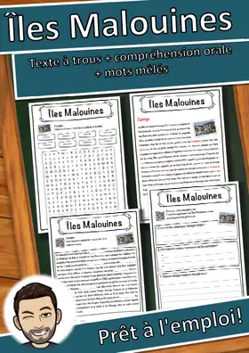
Îles Malouines – Fiche : texte à trous, compréhension orale et mots mêlés

Île – Fiche : texte à trous, compréhension orale et mots mêlés

Étoile de mer – Fiche : texte à trous, compréhension orale et mots mêlés

Énergie nucléaire – Fiche : texte à trous, compréhension orale et mots mêlés

Gallium – Compréhension de lecture : texte à trous, écoute et mots mêlés

Fête de la Réformation – Texte à trous, compréhension orale et mots mêlés

Futur – Compréhension de lecture : texte à trous, écoute et mots mêlés

Fusée – Compréhension de lecture : texte à trous, écoute et mots mêlés

Frontière – Compréhension de lecture : texte à trous, écoute et mots mêlés

Fracturation hydraulique – Texte à trous, compréhension orale et mots mêlés

Empire espagnol – Compréhension de lecture : texte à trous, écoute et mots mêlés

Champigny-sur-Marne – Fiche : texte à trous, compréhension orale et mots mêlés

Francium – Compréhension de lecture : texte à trous, écoute et mots mêlés

Forêt humide – Compréhension de lecture : texte à trous, écoute et mots mêlés

Forêt – Compréhension de lecture : texte à trous, écoute et mots mêlés

Forestier – Compréhension de lecture : texte à trous, écoute et mots mêlés

Forain – Compréhension de lecture : texte à trous, écoute et mots mêlés

Fonds des Nations unies pour l'enfance – Lecture, écoute et mots mêlés (FLS/FLE)

Flérovium – Compréhension de lecture : texte à trous, écoute et mots mêlés

Floride – Compréhension de lecture : texte à trous, écoute et mots mêlés

Finlande – Compréhension de lecture : texte à trous, écoute et mots mêlés

Fidji – Compréhension de lecture : texte à trous, écoute et mots mêlés

Feu follet – Compréhension de lecture : texte à trous, écoute et mots mêlés

Fantasme – Compréhension de lecture : texte à trous, écoute et mots mêlés

Fable – Compréhension de lecture : texte à trous, écoute et mots mêlés

Extinction des espèces – Texte à trous, compréhension orale et mots mêlés

Expropriation – Compréhension de lecture : texte à trous, écoute et mots mêlés

Exil – Compréhension de lecture : texte à trous, écoute et mots mêlés

Europium – Compréhension de lecture : texte à trous, écoute et mots mêlés
Aucune ressource trouvée – essaie un autre mot ou un autre filtre.